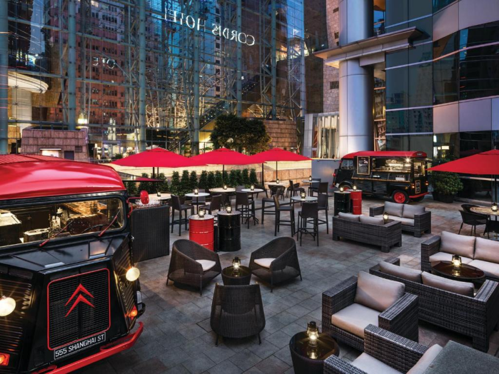
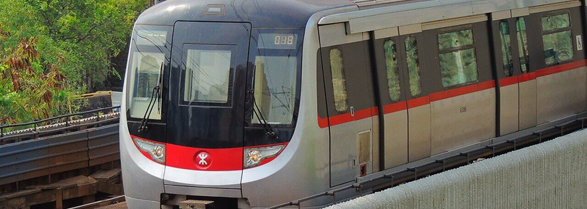
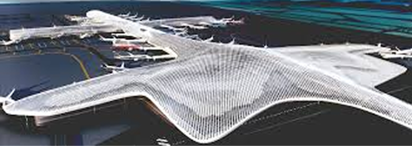
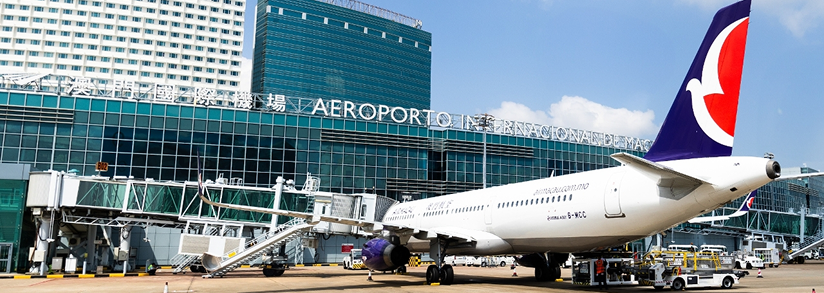

Venue & Travel

Outside view of Cordis
Conference Venue
All rooms and suites at Cordis Hong Kong are equipped with high-speed WiFi and a LED TV.The luxurious marble bathrooms come with separate bathtub and rainshowers.
Cordis Hong Kong is a 45-minute drive from Hong Kong International Airport. The hotel is less than 1 km from Ladies Market, Temple Street Night Market and Flower Market.
The wellness facilities include a fully equipped fitness centre, two fitness studios and an outdoor heated pool, along with the Chuan Spa, which features over 60 unique treatments. Dining options include a contemporary Cantonese restaurant, Ming Court, the trendy European restaurant and bar, Alibi – Wine Dine Be Social, and The Garage Bar, the new outdoor food truck destination bar, as well as The Place, the hotel’s all day dining restaurant.
If you wish to elevate your stay, the spacious Club Lounge offers premium privileges and services for the jetset.
Location: Cordis, Hong Kong, 555 Shanghai St, Mong Kok

By Public Transport
MTR Mong Kok Station: 300m (approx. 5-minute walk)
MTR Yau Ma Tei Station: 700m (approx. 10-minute walk)
Hong Kong West Kowloon Station: 2.1km (High-speed rail terminal; accessible by taxi or MTR)
MTR Kowloon Station: 2.5km (Airport Express and Tung Chung Line)
For MTR route planning: visit mtr.com.hk
From Hong Kong International Airport (HKG)
Take the Airport Express to Kowloon Station (journey duration: approx. 20-25 minutes).
From Kowloon Station, transfer to a taxi (approx. 10 minutes) or take the MTR to Mong Kok Station.
Alternatively, take a taxi directly from the airport to the hotel (journey duration: 31km, approx. 30-40 minutes, depending on traffic).

From Shenzhen Bao'an International Airport (SZX)
Take a cross-border coach or taxi to Hong Kong (64km). Upon arrival in Hong Kong, follow the directions above to reach Cordis.

From Macau International Airport (MFM)
Take a ferry from Macau to Hong Kong (Hong Kong China Ferry Terminal or Macau Ferry Terminal). Upon arrival, take a taxi (84km) or MTR to Mong Kok Station.